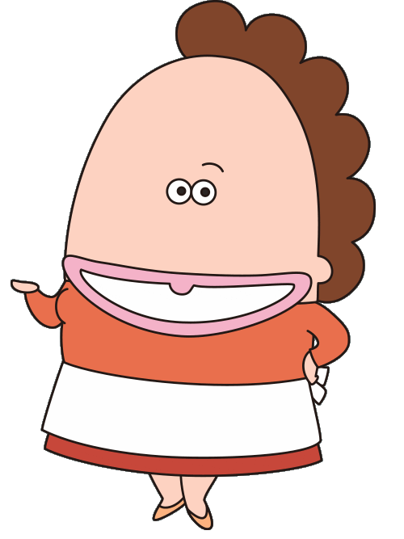
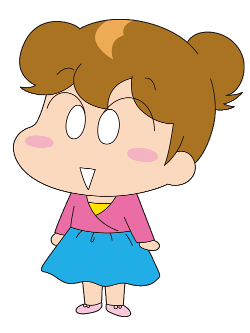

主要人物
花爸
現年約於45歲至50歲間
身高:165公分，體重:78公斤
- 對許多事情興趣缺缺，不怎麼關心，但對老婆的奇特或誇張行為卻經常抱持著看笑話態度，當作娛樂看待。
- 沉默寡言、我行我素，通常對事物的各種情緒和動作反應十分平淡，行事作風有著傳統大男人風格。
- 平日總忙於上班與應酬，生理時間極為固定，偶爾下班後會去居酒屋和朋友喝一杯。
- 口頭禪：「哈哈哈」。

花媽
現年約43歳
身高：165公分，體重：105.5公斤左右
- 習慣誇大自己的情緒、講話內容和動作。
- 秉持勤儉、儉樸的生活態度，對物品錙銖必較，認為名牌是虛有其表，甚至會將貴重物品放很久或過期前夕才用。
- 有著不認輸的精神，對自己的外貌和所作所為往往頗具信心，凡有堅持的目標就要做到最後。
- 口頭禪：「安捏喔」。

花橘子
高中二年級學生
身高：155公分，體重：60公斤
- 因為個子矮小的關係，曾多次被人誤認為是中學生，甚至是小學生。
- 個性幼稚不成熟，性格單純活潑、大而化之且冒失，無法有過於複雜的思想，時常不假思索地表達或從身體動作中透漏自己的想法，並且形容事物時習慣誇張化。
- 喜歡泰迪熊，因此學校所屬社團為「泰迪熊研究社」，簡稱「熊研」。
- 時常為一些小事與花媽意見有異而鬥嘴，但也常會跟花媽訴說心事或討論問題。
花柚子
中學二年級學生
身高：155公分，體重：50公斤
- 在家中行為比較正常，腦力派；很會玩填字遊戲之類，還有很會比喻。
- 有著成熟思想與深奧的內心世界，表面上是話不多的人，喜歡在私底下耍酷，常為雞毛蒜皮的小事感到尷尬並逞強。
- 偶像為丸野丸美，從無他人知曉，本身也非常保密，深怕被別人知道
- 親眼看到花媽或橘子有他認為怪異的舉動時，暗地裡會戲謔地說「沒救了」；同時常因為媽媽或姊姊的行為和言語，及所做或討論之事感到困惑。